электронный
ресурс по учебной дисциплине
1-40 02 01 «Вычислительные машины, системы и сети»
|
||
| Оглавление | Программа | Теория | Практика | Контроль знаний | Об авторах | ||
Троичные векторы и матрицы
16.1. Отношения на множестве троичных векторов. Операции над троичными векторами. Эквивалентность матриц
Ранее было определено понятие троичного вектора. Напомним, что его компоненты принимают значения из множества {0, 1, –}. Троичный вектор можно рассматривать как множество булевых векторов, получаемых из него подстановкой нулей и единиц вместо знаков «–». Так вектор (0 – 1 0 – 1) задает множество {(0 0 1 0 0 1), (0 0 1 0 1 1), (0 1 1 0 0 1), (0 1 1 0 1 1)}, представляющее интервал булева пространства.
Напомним также, что троичный вектор можно интерпретировать как характеристическое множество элементарной конъюнкции. Например, вектор (0 – 1 0 – 1) представляет конъюнкцию ¬х1 х3¬х4 х6. Тогда всякую троичную матрицу (строками которой являются троичные векторы) можно считать представлением ДНФ некоторой булевой функции.
Определим следующие бинарные отношения на множестве троичных векторов одинаковой размерности.
Ортогональность. Троичные векторы и и v ортогональны по i-й компоненте, если и только если i-я компонента имеет значение 0 в одном из этих векторов и 1 – в другом. Троичные векторы ортогональны, если они ортогональны хотя бы по одной компоненте. Например, векторы (0 – 1 0 – 1) и (0 1 0 – 1 0) ортогональны по третьей и шестой компонентам.
Пересечение. Если векторы и и v неортогональны, то они находятся в отношении пересечения. Это понятие согласуется с понятием пересечения множеств: пересекающиеся троичные векторы представляют пересекающиеся интервалы. Примером пересекающихся векторов являются векторы (0 – 1 0 – 1) и (0 0 1 – 1– ).
Смежность. Векторы и и v, ортогональные только по одной компоненте, являются смежными. Соответствующие элементарные конъюнкции тоже смежны. Над ними можно выполнять операцию обобщенного склеивания. Векторы (0 – 1 0 – 1) и (0 1 0 – 1 –) являются смежными, так как они ортогональны только по третьей компоненте.
Соседство. Векторы и и v являются соседними, если по некоторой i-й компоненте они ортогональны, а значения остальных одноименных компонент совпадают. Такими, например, являются векторы (0 – 1 0 – 1) и (0 – 1 0 – 0).
Поглощение. Вектор и поглощает вектор v, если и только если все компоненты вектора и, значения которых отличны от «–», совпадают с одноименными компонентами вектора v. Интервал, представляемый вектором v, является подмножеством интервала, представляемого вектором и. Например, вектор (0 – 1 0 – –) поглощает вектор (0 – 1 0 – 0).
Нетрудно видеть, что отношения ортогональности, пересечения, смежности и соседства обладают свойством симметричности, а отношение поглощения транзитивно. Кроме того, отношения пересечения и поглощения рефлексивны.
16.2. Эквивалентность матриц
Троичная матрица U эквивалентна булевой матрице W, если каждая из строк матрицы W поглощается хотя бы одной строкой матрицы U, а любой вектор, не совпадающий ни с одной из строк матрицы W, не поглощается ни одной строкой матрицы U.
Троичные матрицы U и V эквивалентны, если существует булева матрица, эквивалентная обеим матрицам U и V. Бинарное отношение эквивалентности матриц рефлексивно, симметрично и транзитивно.
Ясно, что эквивалентные матрицы представляют одну и ту же область булева пространства. Булеву матрицу можно интерпретировать как представление совершенной ДНФ. Две эквивалентные троичные матрицы представляют ДНФ одной и той же булевой функции. Всякая замена троичной матрицы U эквивалентной ей матрицей V называется равносильным преобразованием матрицы U. Рассмотрим некоторые простейшие равносильные преобразования троичной матрицы.
Склеивание соседних строк. Две соседние строки можно заменить одной строкой, где значения компонент определяются следующим образом. Компонента, по которой исходные строки ортогональны, приобретает значение «–». Значения остальных компонент совпадают со значениями соответствующих компонент исходных строк. Например,
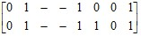 = 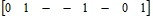.
Поглощение. Строка, поглощаемая другой строкой той же матрицы, может быть удалена. Например,
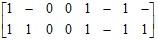 = 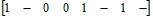.
Обобщенное склеивание смежных строк. Если в матрице присутствуют две смежных строки, то в эту матрицу можно добавить строку, значения компонент которой определяются следующим образом. Компонента, по которой исходные строки ортогональны, приобретает значение «–». Если хотя бы одна из одноименных компонент смежных строк имеет значение 0 или 1, то соответствующая компонента новой строки приобретает это же значение. В противном случае она получает значение «–». Например,
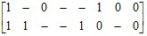 = 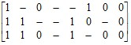.
Разложение строки по i-й компоненте. Строку и, имеющую значение «–» в i-й компоненте, можно заменить парой строк, одна из которых получается из и присвоением i-й компоненте значения 0, другая – значения 1. Например,
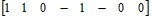 = 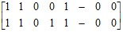.
Эта операция является обратной по отношению к операции простого склеивания. Ее последовательное применение по всем компонентам троичного вектора, имеющим значение «–», приводит к множеству булевых векторов, образующих интервал, представляемый данным вектором.
16.3. Анализ троичной матрицы на вырожденность
Троичная матрица U является вырожденной, если не существует троичного вектора, ортогонального каждой строке матрицы U. Такая матрица представляет совокупность интервалов, покрывающую все булево пространство, и если ее интерпретировать как ДНФ некоторой булевой функции, то эта функция является константой 1.
Поставим задачу следующим образом. Для заданной троичной матрицы U требуется найти троичный вектор v, ортогональный каждой ее строке, или убедиться в том, что такого вектора не существует. Вектор v в этом случае представляет набор значений аргументов, обращающий в нуль функцию, задаваемую матрицей U.
Троичную матрицу можно рассматривать как сжатую форму булевой матрицы, если считать, что всякий троичный вектор представляет множество булевых векторов, получаемых заменой значений «–» на всевозможные комбинации нулей и единиц. Троичный вектор, имеющий k компонент со значением «–», представляет множество 2k булевых векторов. Будем говорить, что любой из этих булевых векторов покрывается данным троичным вектором. Например, матрица
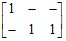
является сжатой формой следующей булевой матрицы (заметим, что, если специально не оговорено, рассматриваются матрицы, не имеющие одинаковых строк):
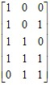.
Троичный вектор (0, 0, –) ортогонален обеим строкам приведенной троичной матрицы. Он представляет множество из двух булевых векторов, (0, 0, 0) и (0, 0, 1), ни один из которых не является строкой соответствующей булевой матрицы. Очевидно, что если некоторая троичная матрица с п столбцами является вырожденной, то для любого п-компонентного булева вектора в данной матрице имеется покрывающая его строка. Если же существует булев вектор, не покрываемый ни одной строкой троичной матрицы, число столбцов которой равно размерности данного вектора, то данная матрица не вырождена. Следовательно, решить задачу о вырожденности троичной матрицы можно простым перебором всех 2п различных булевых векторов, сопровождаемым поиском для каждого вектора покрывающей его строки. Однако более эффективным является рассматриваемый ниже редукционный метод.
Данный метод опирается на комбинаторный поиск. Текущая ситуация характеризуется двумя переменными величинами: троичным вектором w, число компонент которого фиксировано и равно числу столбцов в заданной матрице U, и троичной матрицей Т, значениями которой будут служить некоторые миноры матрицы U. Под минором матрицы понимается ее часть, образованная заданным подмножеством строк и заданным подмножеством столбцов. Перебор значений вектора w должен привести к искомому вектору v, если он существует.
Положим, что в текущей ситуации уже определены значения некоторых компонент вектора w, т. е. им приписаны значения 0 или 1, и отыскиваются значения остальных компонент, такие, чтобы вектор w стал ортогональным каждой из строк матрицы Т (ее текущего значения), столбцы которой ставятся в соответствие этим компонентам. В начальной ситуации матрица Т совпадает с матрицей U, а вектор w полностью неопределен, т. е. все его компоненты имеют значение «–».
Очередной шаг заключается в приписывании значения 0 или 1 некоторой компоненте вектора w или в упрощении матрицы Т путем удаления некоторых строк и столбцов с сохранением обозначений остающихся. Каждый раз в матрице Т остаются только те строки, которые еще не являются ортогональными вектору w, и столбцы, которые соответствуют некоторым компонентам вектора w. Это те компоненты, которые можно использовать для обеспечения ортогональности вектора w данным строкам. Перед выполнением очередного шага, если позволяют условия, текущая ситуация упрощается по следующим правилам редукции.
Правило 1. Из матрицы Т удаляются столбцы, не содержащие ни значений 0, ни значений 1. (Какое бы значение ни приписывалось компонентам вектора w, соответствующим таким столбцам, ни одна из строк матрицы Т не будет ортогональной вектору w по этим компонентам.)
Правило 2. Из матрицы Т удаляются строки, ортогональные вектору w, а затем столбцы, которым соответствуют компоненты вектора w со значением 0 или 1.
Правило 3. Если в матрице Т имеется строка, где лишь одна компонента обладает значением, отличным от «–», то соответствующей компоненте вектора w приписывается инверсное значение. (Только таким образом можно обеспечить в текущей ситуации ортогональность данной строки вектору w.)
Правило 4. Если в матрице Т существует столбец, не содержащий значения 0 (или 1), то это значение приписывается соответствующей компоненте вектора w. (Если в столбце присутствуют как нули, так и единицы, то, приписывая соответствующей компоненте какое-то из этих значений, мы делаем одни строки ортогональными вектору w и теряем возможность использовать данную компоненту для обеспечения ортогональности других строк. Такой потери не происходит, когда выполняется данное правило при указанном условии. Текущая ситуация при этом упрощается.)
Когда редуцирование становится невозможным, производится расщепление текущей ситуации.
Правило расщепления предписывает перебор значений 0 и 1 некоторой компоненты вектора w. При этом рекомендуется выбирать такую компоненту, которая соответствует максимально определенному столбцу матрицы Т, т. е. столбцу, имеющему минимальное число значений «–».
Правило нахождения решения. Если непосредственно после удаления некоторой строки из матрицы Т по правилу 2 матрица становится пустой, текущее значение вектора w представляет искомое решение v.
Правило возврата. Если матрица Т становится пустой непосредственно после удаления некоторого столбца или если она содержит строку без значений 0 и 1, то на данной ветви дерева поиска вектор v найти невозможно и следует продолжить обход дерева поиска, возвратившись к последней из точек ветвления с незавершенным перебором.
Правило прекращения поиска. Если при полном обходе дерева поиска вектор v найти не удалось, то это свидетельствует о вырожденности матрицы U.
Рассмотрим для примера следующую троичную матрицу, столбцы которой для удобства обозначим теми же буквами a, b, c, d, e, f, что и соответствующие им компоненты вектора w = (a, b, c, d, e, f):
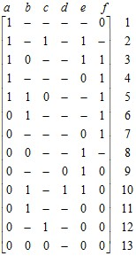
Начальная ситуация характеризуется матрицей Т, совпадающей с исходной матрицей и вектором w = (– – – – – –). Непосредственное сокращение матрицы Т невозможно, поскольку не выполняются условия применения правил редукции. Поэтому воспользуемся правилом расщепления и образуем точку ветвления процесса поиска вектора v, соответствующую выбору значения компоненты а вектора w. Положим а = 1. Тогда, согласно правилам 2 и 1, определение остальных значений компонент вектора w сведется к поиску вектора, ортогонального матрице
Т = 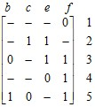.
Обратив внимание на строку 1 и применяя правило 3, припишем компоненте f вектора w значение 1, после чего матрица сокращается по правилу 2 до следующего вида:
Т = 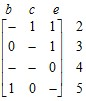 .
Далее опять применяется правило 3, компонента е получает значение 1, т. е. теперь w = (1 – – – 1 1), и матрица Т сокращается до
Т = 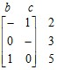.
Согласно правилу 3 полагаем с = 0 и b = 1, т. е. w = (1 1 0 – 1 1). Далее срабатывает правило возврата, поскольку матрица Т становится пустой после удаления столбцов. Это означает, что, направляясь в дереве поиска по ветви, соответствующей а = 1, не получаем искомого вектора v. При присвоении всех возможных значений оставшимся компонентам строка 5 остается не ортогональной вектору w.
Возвратившись к точке ветвления, полагаем теперь а = 0. Последующее редуцирование приводит к следующему значению переменной матрицы Т:
Т = 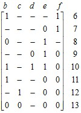.
Поскольку дальнейшее редуцирование невозможно, применяем правило расщепления. Выберем компоненту е и положим е = 1. Матрица Т сокращается до
Т = 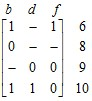.
Далее по правилу 3 компонента b получает значение 1 и матрица Т сокращается до
Т = 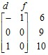.
Затем следует выбор значения 0 для компоненты f и получение остатка
Т = 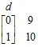,
который оказывается вырожденным: компонента d должна получить одновременно значения 0 и 1, что невозможно. Опять срабатывает правило возврата.
Рассмотрим теперь оставшийся вариант, положив е = 0. Здесь необходимо найти вектор, ортогональный матрице
Т = 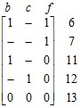.
В соответствии с правилом 3 последовательно выбираются значения f = 0, b = 0, c = 0, после чего становится очевидным, что нельзя сделать вектор w ортогональным строке 13.
Перебор значений вектора w завершен и установлено, что вектора v, ортогонального всем строкам матрицы U, не существует, т. е. матрица U оказывается вырожденной.
Дерево поиска, соответствующее описанному процессу, изображено на рис. 16.1, где вершины обозначены символами компонент вектора w, а дуги – их значениями.
Рис. 16.1. Дерево поиска ортогонального вектора
| (С) БГУИР |